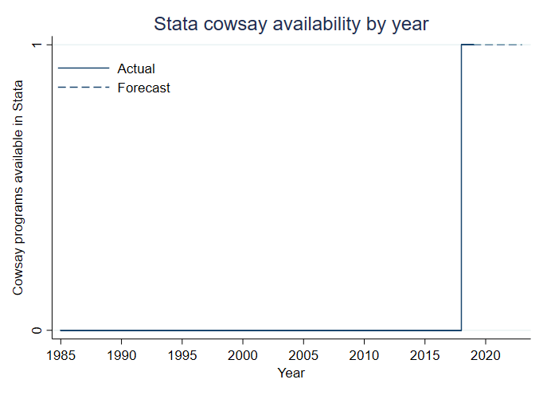

Overview
| Installation
| Usage
| Benchmarks
| To-Do
| Acknowledgements
| License
Mooooo
version 1.0 25jul2018
Much-needed Cowsay functionality for Stata.
You have two options to get mooving with cowsay.
net install cowsay, from(https://raw.githubusercontent.com/mdroste/stata-cowsay/master/)
Consider the following example Stata output:
. sysuse auto
(1978 Automobile Data)
. reg price mpg
Source | SS df MS Number of obs = 74
-------------+---------------------------------- F(1, 72) = 20.26
Model | 139449474 1 139449474 Prob > F = 0.0000
Residual | 495615923 72 6883554.48 R-squared = 0.2196
-------------+---------------------------------- Adj R-squared = 0.2087
Total | 635065396 73 8699525.97 Root MSE = 2623.7
------------------------------------------------------------------------------
price | Coef. Std. Err. t P>|t| [95% Conf. Interval]
-------------+----------------------------------------------------------------
mpg | -238.8943 53.07669 -4.50 0.000 -344.7008 -133.0879
_cons | 11253.06 1170.813 9.61 0.000 8919.088 13587.03
------------------------------------------------------------------------------
. cowsay "Mooo! The R2 is `e(r2)'"
-----------------------------------
< Mooo! The R2 is .2195828561874973 >
-----------------------------------
\ ^__^
\ (oo)\_______
(__)\ )\/\
||----w |
|| ||
For more documentation, consult the help file in Stata:
help cowsay
Cowsay is the first Stata program to implement cowsay functionality in 33 years. This point is illustrated below.

The following items will be addressed before submitting to SSC, maybe:
Cowsay was written by Tony Monroe a really long time ago.
Mauricio Caceres Bravo (@mcaceresb) made this a lot better.
Cows have no concept of software licensing.